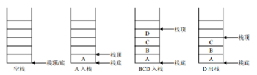
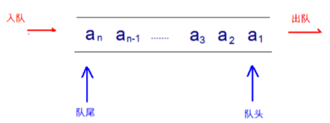
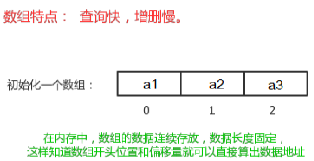
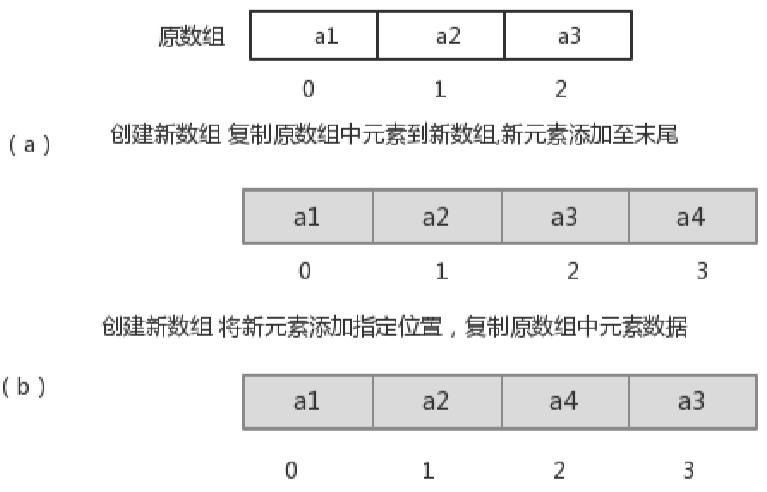
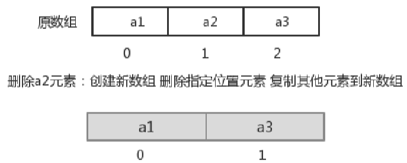
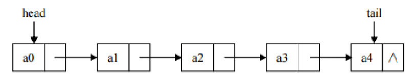
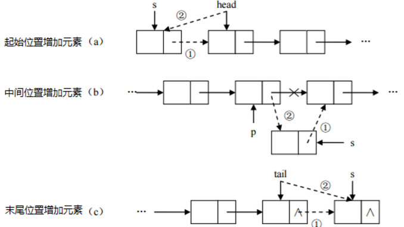
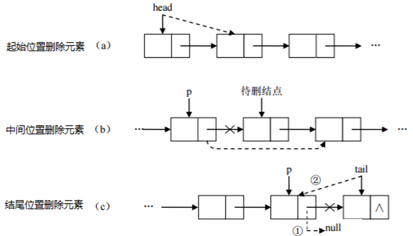
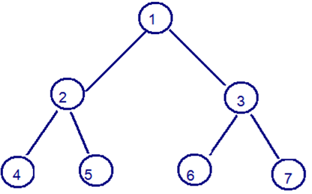

2019-11-04-23:03:13
目录：
1.常用的数据结构
2.栈
3.队列
4.数组
5.链表
6.红黑树
常用的数据结构:
包含:栈、队列、数组、链表和红黑树
栈：
栈：stack,又称堆栈，它是运算受限的线性表，其限制是仅允许在标的一端进行插入和删除操作，不允许在其 他任何位置进行添加、查找、删除等操作
特点：
1.先进后出（即，存进去的元素，要在后它后面的元素依次取出后，才能取出该元素）。例如，子弹压进弹 夹，先压进去的子弹在下面，后压进去的子弹在上面，当开枪时，先弹出上面的子弹，然后才能弹出下面的 子弹。
2.栈的入口、出口的都是栈的顶端位置。
名词注意：
1.压栈：就是存元素。即，把元素存储到栈的顶端位置，栈中已有元素依次向栈底方向移动一个位置
2.弹栈：就是取元素。即，把栈的顶端位置元素取出，栈中已有元素依次向栈顶方向移动一个位置。

队列：
队列：queue,简称队，它同堆栈一样，也是一种运算受限的线性表，其限制是仅允许在表的一端进行插入， 而在表的另一端进行删除。
特点：
1.先进先出（即，存进去的元素，要在它前面的元素依次取出后，才能取出该元素）。例如，小火车过山洞，车头先进去，车尾后进去；车头先出来，车尾后出来。
2.队列的入口、出口各占一侧。例如，下图中的左侧为入口，右侧为出口

数组：
数组:Array,是有序的元素序列，数组是在内存中开辟一段连续的空间，并在此空间存放元素。就像是一排出 租屋，有100个房间，从001到100每个房间都有固定编号，通过编号就可以快速找到租房子的人。
特点：
1.查找元素快：通过索引，可以快速访问指定位置的元素

2.增删元素慢 ：
指定索引位置增加元素：需要创建一个新数组，将指定新元素存储在指定索引位置，再把原数组元素根据索引，复制到新数组对应索引的位置。如下图

指定索引位置删除元素：需要创建一个新数组，把原数组元素根据索引，复制到新数组对应索引的位 置，原数组中指定索引位置元素不复制到新数组中。如下图

链表：
链表:linked list,由一系列结点node（链表中每一个元素称为结点）组成，结点可以在运行时i动态生成
结点：
1.一个是存储数据元素的数据域
2.一个是存储下一个结点地址的指针域。
特点：
1.多个结点之间，通过地址进行连接。例如，多个人手拉手，每个人使用自己的右手拉住下个人的左手，依次 类推，这样多个人就连在一起了。

2.查找元素慢：想查找某个元素，需要通过连接的节点，依次向后查找指定元素
3.增删元素快
增加元素：只需要修改连接下个元素的地址即可

删除元素：只需要修改连接下个元素的地址即可

红黑树：
二叉树：binary tree ,是每个结点不超过2的有序树（tree）
特点：
1.二叉树是每个节点多有两个子树的树结构。顶上的叫根结点，两边被称作“左子树”和“右子树”。

红黑树：二叉树的一种比较有意思的叫做红黑树，红黑树本身就是一颗二叉查找树，将节点插入后，该树仍然 是一颗二叉查找树。也就意味着，树的键值仍然是有序的
红黑树的约束：
1. 节点可以是红色的或者黑色的
2. 根节点是黑色的
3. 叶子节点(特指空节点)是黑色的
4. 每个红色节点的子节点都是黑色的
5. 任何一个节点到其每一个叶子节点的所有路径上黑色节点数相同
红黑树的特点：
速度特别快,趋近平衡树,查找叶子元素少和多次数不多于二倍